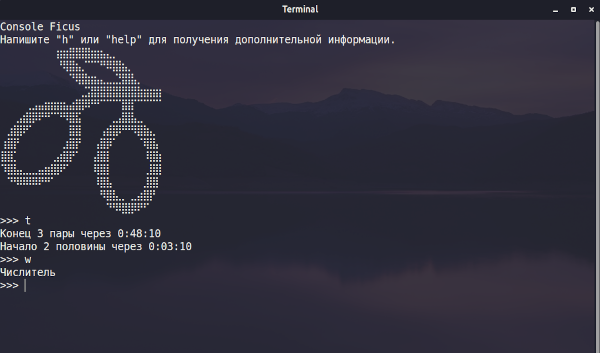

Console Ficus - кроссплатформенное программное обеспечение для информирования данными об учёбе. Программа не имеет графического интерфейса и идеально подходит для тех, у кого в компьютере слабые комплектующие, ну или для тех кто просто часто пользуется терминалом. Одно из преимуществ - гибкие настройки, которые осуществляются посредством редактирования файла конфигурации. Инструкцию по установке, а так же исходный код программы вы можете найти здесь.
Console Ficus
